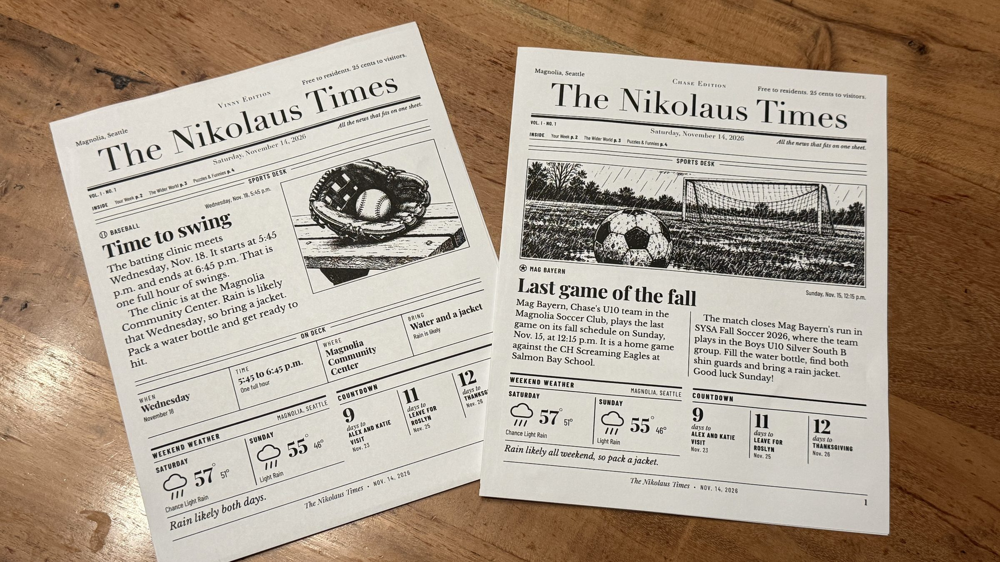
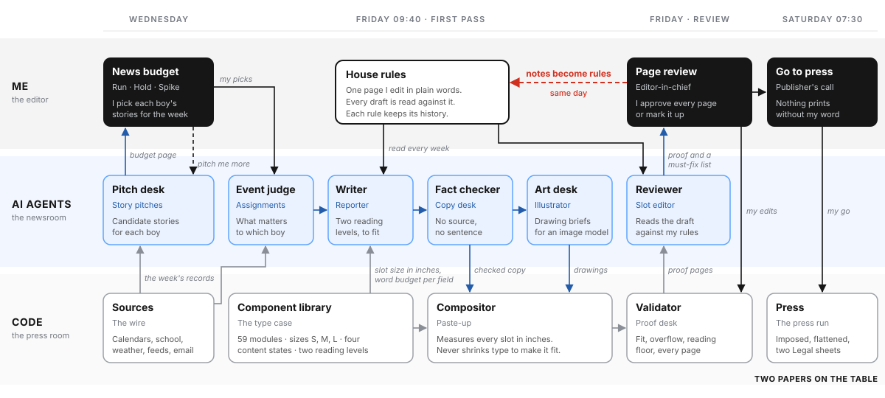
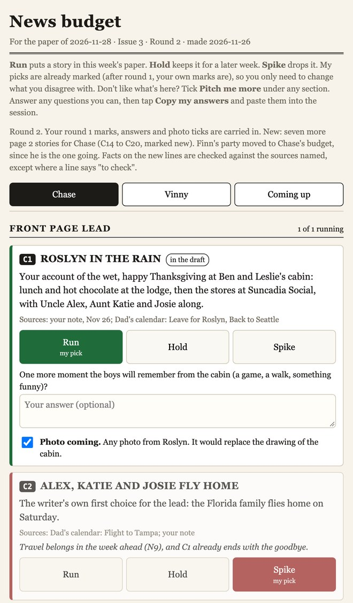
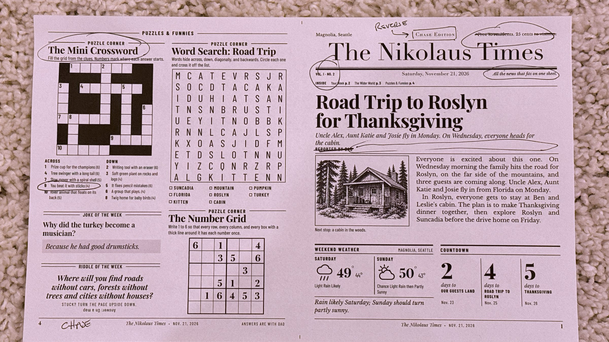
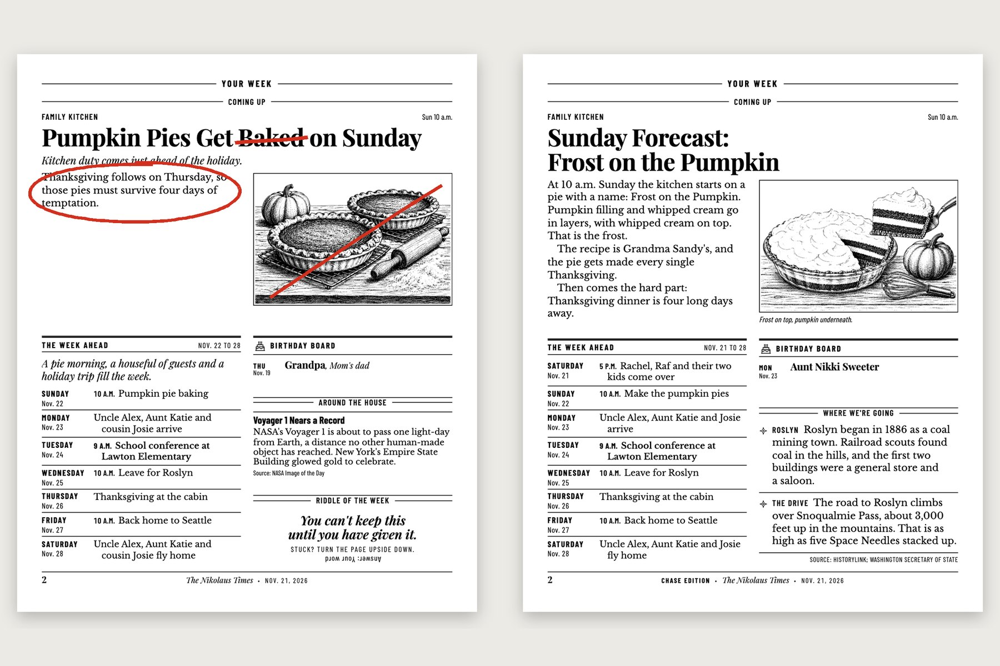
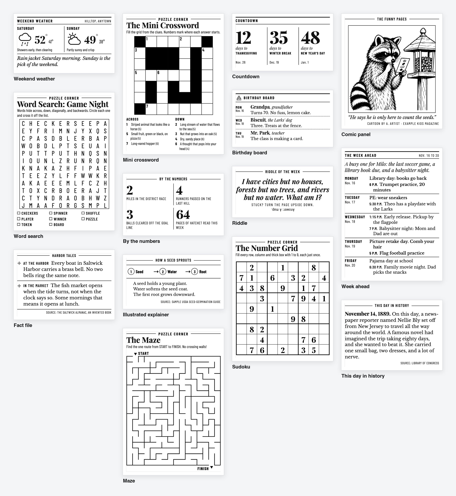
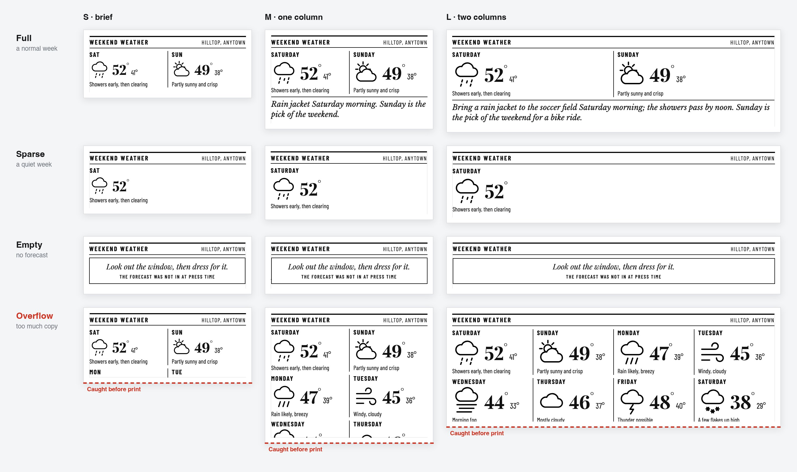
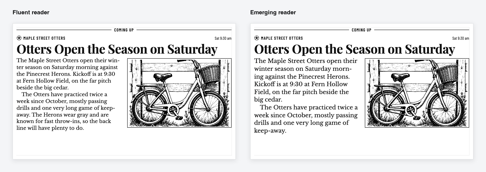
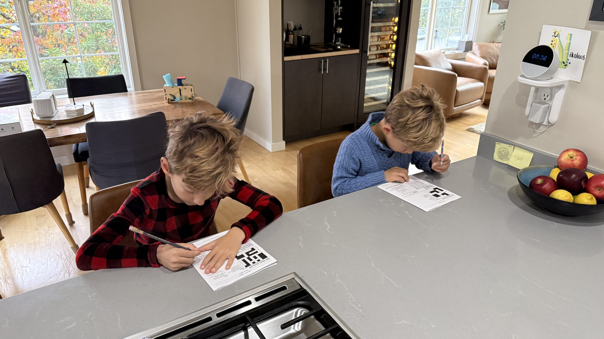

Family newspaper
The Nikolaus Times
A four-page newspaper for each of my boys, on the kitchen table every Saturday morning. AI agents draft it from our family calendar. I choose the stories and approve every page.

Run like a real newsroom
Every desk of a city paper has an owner here: me, an AI agent, or plain code. Agents draft and check. Code measures and validates. I decide what runs and what prints.

I choose the news first
Before a word is written, the AI pitches stories for each boy from the week's calendar, school notes and weather. I mark each one Run, Hold or Spike from my phone, answer a question or two, and ask for more pitches when nothing fits.
The agents write only what I picked.

My red pen becomes next week's rules
The first pass arrives on Friday morning. In issue 2 the writer saw "Make pumpkin pies" on the calendar and wrote that the pies were baked. They are not: the family pie is layered and chilled. The story was thirteen words long and the drawing guessed wrong too.
I marked it up, and the note became a house rule the same day: a calendar entry says what and when, never how. The writer and an AI reviewer read every rule before the next draft.


A component library for paper
Every box on the page is a component with a print size, a word budget per field and a designed empty state. Puzzles are drawn by code and checked solvable.
- 59
- components
- 3
- print sizes
- 4
- content states
- 2
- reading levels
- 1,416
- renders audited per run

Every size, every kind of week
Each component is designed for a normal week, a quiet one, no news at all, and too much copy. The validator catches overflow before I see a proof.

One story, two readers
Same slot, same facts. The younger reader's edition gets larger type and fewer, shorter sentences.

